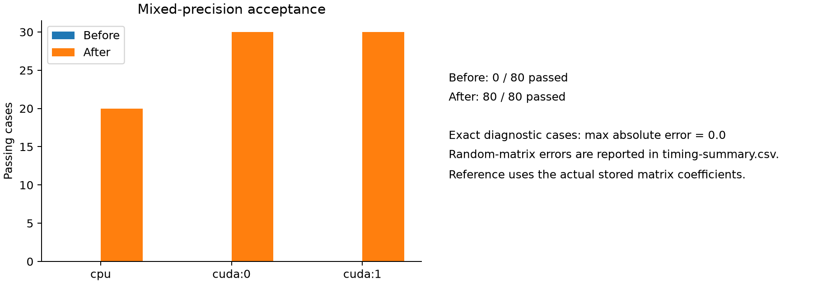
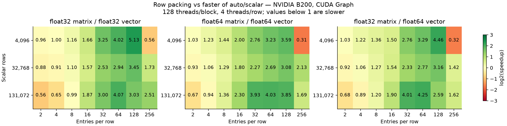
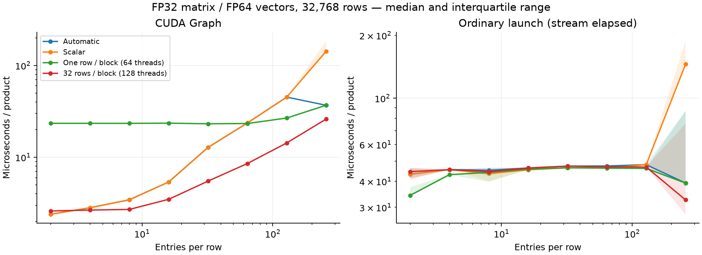
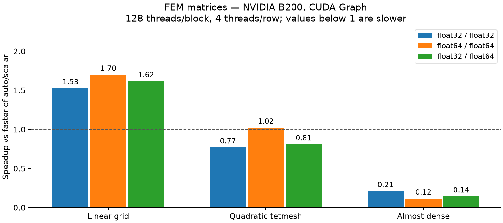

FP32 matrix storage with FP64 vectors and arithmetic, plus explicit row packing for non-transposed CUDA products. Existing automatic dispatch is retained.
Base: c47fe4c86c99cfcff5b78e823d167972a4c3520e
Implementation: 86f766bfea3900f9eb36937e9a2848b05e29ee7d
Device: NVIDIA B200; CUDA Toolkit 13.0; physical GPU 1 isolated with CUDA_VISIBLE_DEVICES=1. Both correctness devices are B200; this is not evidence across architectures.
80 diagnostic cases change from unsupported-type errors to passing results on CPU and both GPUs. The exact diagnostic references match with zero absolute error. Random-matrix maximum absolute errors are {'float32/float32': 1.545842150108001e-05, 'float64/float64': 2.842170943040401e-14, 'float32/float64': 2.842170943040401e-14}; references use the actual stored coefficients.

Configuration fixed before the validation sweep: 128 threads per block, 32 scalar rows per block (4 threads per row). Speedup is relative to the faster of automatic dispatch and the forced scalar path. Values below 1 represent slowdowns.

| nrow | length | storage | compute | auto_us | scalar_us | packed_us | speedup | min_round_speedup |
|---|---|---|---|---|---|---|---|---|
| 32768 | 32 | float32 | float32 | 11.732 | 11.730 | 4.642 | 2.527 | 2.520 |
| 32768 | 32 | float64 | float64 | 12.440 | 12.440 | 5.487 | 2.267 | 2.260 |
| 32768 | 32 | float32 | float64 | 12.802 | 12.817 | 5.497 | 2.329 | 2.322 |
| 32768 | 64 | float32 | float32 | 21.394 | 21.368 | 7.268 | 2.940 | 2.932 |
| 32768 | 64 | float64 | float64 | 22.741 | 22.729 | 8.451 | 2.690 | 2.683 |
| 32768 | 64 | float32 | float64 | 23.650 | 23.657 | 8.547 | 2.767 | 2.760 |
| 131072 | 32 | float32 | float32 | 39.161 | 39.176 | 13.052 | 3.000 | 2.998 |
| 131072 | 32 | float64 | float64 | 61.503 | 61.541 | 15.645 | 3.931 | 3.565 |
| 131072 | 32 | float32 | float64 | 63.229 | 63.156 | 15.745 | 4.011 | 3.314 |
| 131072 | 64 | float32 | float32 | 95.596 | 95.561 | 23.464 | 4.073 | 3.802 |
| 131072 | 64 | float64 | float64 | 111.732 | 111.760 | 27.729 | 4.029 | 3.663 |
| 131072 | 64 | float32 | float64 | 116.857 | 117.486 | 27.482 | 4.252 | 3.874 |

These are the repository's existing linear-grid, quadratic-tetmesh and almost-dense benchmark matrices. Promoted FP64 matrices contain the same coefficients as the FP32 originals.

| matrix | storage | compute | auto_us | scalar_us | packed_us | speedup |
|---|---|---|---|---|---|---|
| BsrMvLinearGridMatrix | float32 | float32 | 21.913 | 21.904 | 14.353 | 1.526 |
| BsrMvLinearGridMatrix | float32 | float64 | 26.703 | 26.778 | 16.518 | 1.617 |
| BsrMvLinearGridMatrix | float64 | float64 | 33.463 | 33.469 | 19.696 | 1.699 |
| BsrMvQuadraticTetmeshMatrix | float32 | float32 | 126.727 | 120.331 | 156.598 | 0.768 |
| BsrMvQuadraticTetmeshMatrix | float32 | float64 | 144.872 | 154.369 | 179.233 | 0.808 |
| BsrMvQuadraticTetmeshMatrix | float64 | float64 | 175.898 | 204.036 | 172.058 | 1.022 |
| BsrMvAlmostDense | float32 | float32 | 14.600 | 241.477 | 69.732 | 0.209 |
| BsrMvAlmostDense | float32 | float64 | 15.648 | 249.479 | 110.202 | 0.142 |
| BsrMvAlmostDense | float64 | float64 | 15.644 | 331.733 | 135.892 | 0.115 |
Linear-grid gains do not generalize to quadratic-tetmesh or almost-dense matrices with this fixed configuration. The measurements support an explicit option, not a universal replacement or a new automatic dispatch rule.
The table compares the automatic path against the unmodified base for matched FP32/FP32 and FP64/FP64 cases. Ratios are after/before latency, so values above 1 are slower. Ordinary-launch measurements include variable host-submission gaps and do not establish an end-to-end improvement.
| mode | median_ratio | min_ratio | max_ratio |
|---|---|---|---|
| graph | 1.001 | 0.873 | 1.016 |
| launch | 1.025 | 0.096 | 1.366 |
For 1,048,576 coefficients, matrix value storage is 4,194,304 bytes in FP32 and 8,388,608 bytes in FP64. Index storage is 4,325,380 bytes in either case. The warm conversion-plus-allocation median is 0.735 ms (range 0.661–2.436 ms); this variable host-side cost is excluded from steady-state SpMV comparisons.
Compilation, allocation, reference generation and at least 50 ms of warmup are outside timing. Five batches of six samples use randomized path order. GPU events time 50 products per sample. Ordinary-launch stream times include host-submission gaps; graph times measure repeated captured execution. All products overwrite the output (beta=0).
The option is explicit because short rows and some small matrices with long rows can regress, and only one GPU architecture has been measured. No default heuristic, solver dtype inference, or autodiff support is changed. CPU forced-tile behavior is a pre-existing limitation documented in README.txt; CPU tests cover automatic/scalar and transpose paths.
This is an independent correctness and performance evaluation. No downstream production deployment or maintainer assignment is claimed. PR organization and publication remain undecided.